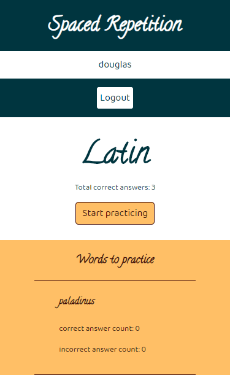
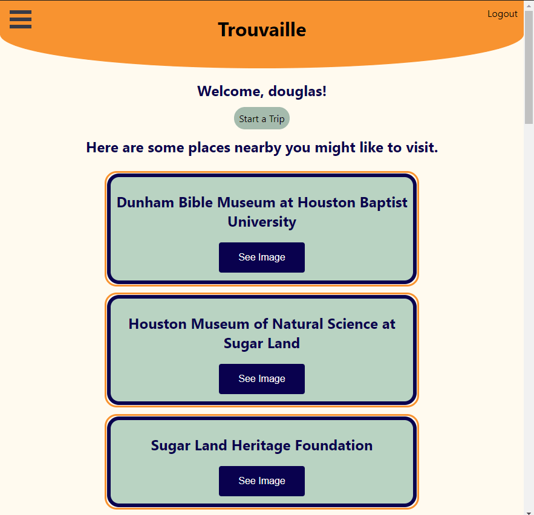
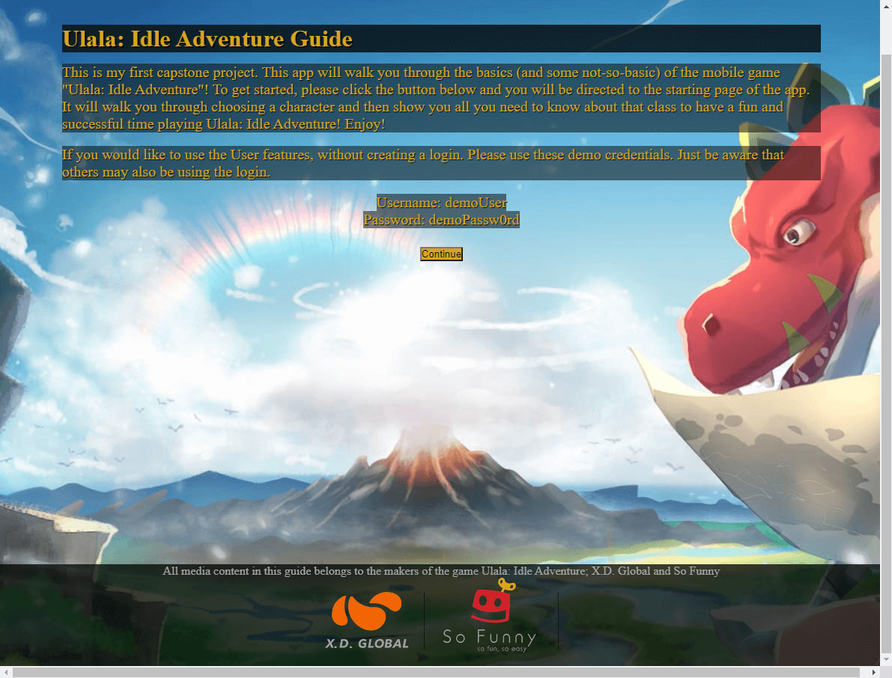

Hello! My name is Douglas, and I am a full-stack web developer.
I love coding because I enjoy the rush of being able to solve puzzles and everything about code, for me, is just solving a puzzle! I am particularly fond of making the functionality of a site work smoothly and seamlessly.
I first became interested in web development when I was put in charge of maintaining the used motorcycle inventory page of the Harley-Davidson dealership where I used to work. I decided to follow through on that interest when I realized that I could make a better website for my church.
I have always had a passion for working with and advancing with a team. Even when I was working in sales, it was all about putting the best person with the customer. When I became a manager, I loved coaching and developing my employees. I can't wait to work with other great programmers in order to make amazing applications!
If I am not working on an app, then I am usually gaming. I also serve at my Church and am a voracious reader. My current pursuits include getting my CompTIA A+ certification and learning how to speak Chinese.
Contact Me
email: dminerlaw@gmail.com LinkedIn GitHub
Projects
Quiz App

This was my first coding project. It is a general trivia quiz that takes the user through a series of questions, providing feedback, and tracking progress and score throughout the quiz. It uses responsive design and takes advantage of the React-ful design pattern to keep the DOM uncluttered and the page loading quickly.
Technologies Used: JavaScript, jQuery, HTML5, and CSS
Learn Latin with Spaced Repetition
This app was built with a partner. Our Spaced Repetition app allows users to build their vocabulary in new languages. Using the linked list data structure, our app efficiently tests users knowledge. Words that are guessed incorrectly are presented more frequently. Users can see their total score and a dashboard with statistics for each word in the language.
Technologies Used: JavaScript, jQuery, HTML5, CSS, React.js, Node.js, Express, CORS, Mocha, Chai, PostgreSQL, Postgrator, nodemon, and supertest
Trouvaille
This project was created in a team of six. I was given the role of Project Manager. We used the Google Maps API and the Google Places API to create a fun travel app that would allow you to pick personal interests and be presented with options to stop at on the way to your destination.
Technologies Used: JavaScript, React.js, HTML5, Sass, CSS, Babel, Node.js, Express, Mocha, Chaie, CORS, Helmet, Morgan, PostgreSQL, Postgrator, nodemon, and supertest.
Ulala: Idle Adventure Player Guide
This was my first solo project. I was brand new to the idle game "Ulala: Idle Adventure", and was having a hard time finding a website that had all of the basic information that a new player would need. So I decided to make one!
Technologies Used: JavaScript, jQuery, HTML5, CSS, React.js, Node.js, Express, CORS, Mocha, Chai, PostgreSQL, Postgrator, nodemon, and supertest